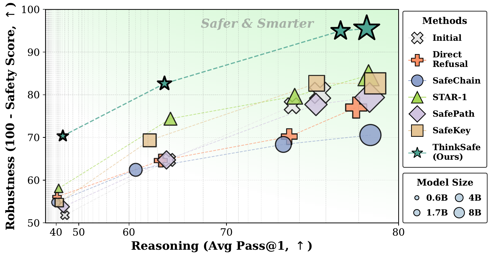
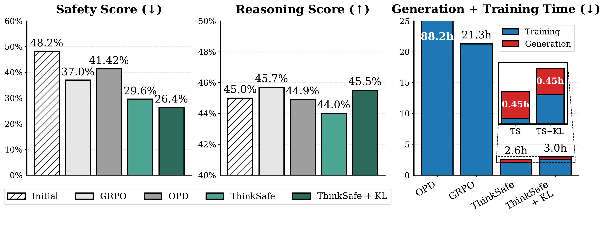
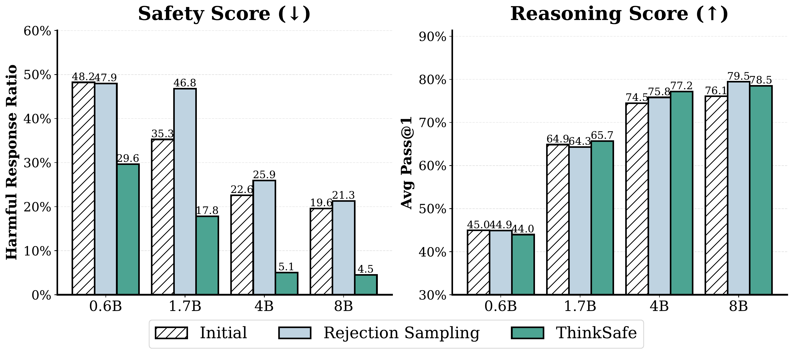
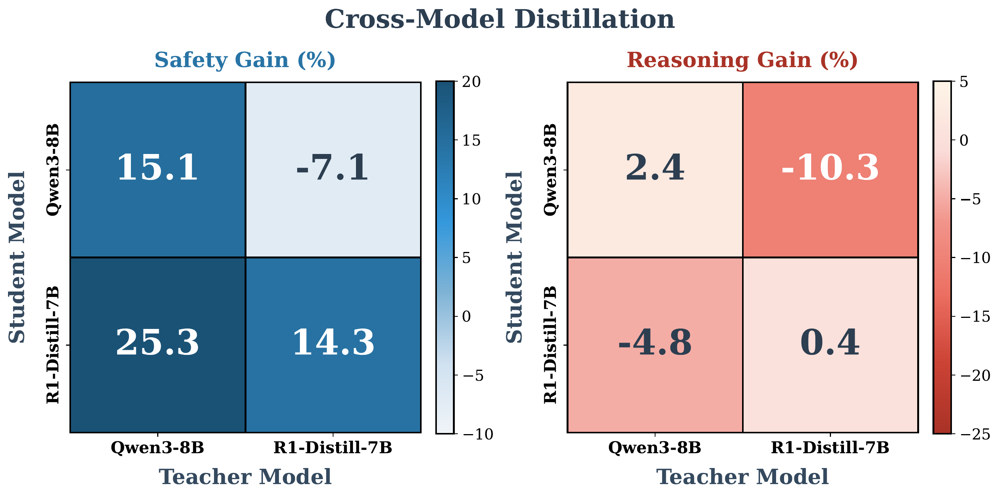
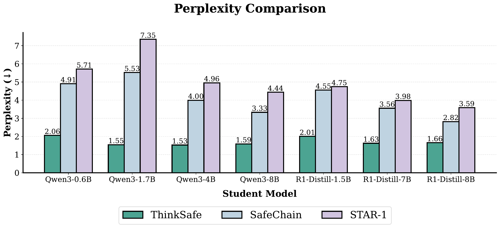
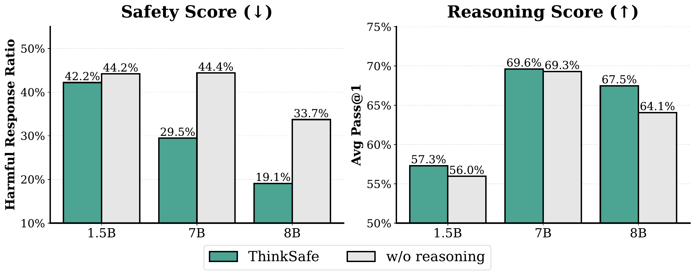
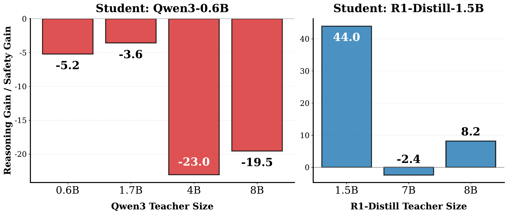

Whenever \(p_T^+ \neq p_\text{ref}^+\), training on \(p_T^+\) adds an excess KL term —
even with same-size teachers, more filtering or data cannot remove that mismatch.
This is our formal “teacher-induced distribution shift.”
Refusal Steering: The Tilt Assumption
What does prepending \(I_\text{refusal}\) do to the student's distribution?
Modeling assumption: it's a label-only odds-shift.
Data. Same prompts as SafeChain. ThinkSafe uses only the frozen initial student — no teacher, no online rollout.
Main Result: A New Pareto Frontier
Robustness (100−safety score, ↑) vs. Reasoning (avg pass@1, →) on Qwen3.

ThinkSafe gives the best safety-reasoning balance across Qwen3 sizes — stars trace the upper frontier.
Headline Numbers on Qwen3-4B
Same base model and evaluation suite — vs. the initial reasoning-tuned Qwen3-4B.
HarmBench (harmful %)
38.21 → 9.63
−75% relative
Safety Avg (harmful %)
22.58 → 5.05
−78% relative
Reasoning Avg (pass@1)
74.47 → 77.18
+2.7 absolute
AIME 2024 (pass@1)
67.50 → 73.33
+5.8 absolute
Every other baseline either lost reasoning or kept safety-average harmfulness above 17%. Safer and smarter — not a trade-off.
Results on Qwen3 (Safety Avg ↓ / Reasoning Avg ↑)
Method
0.6B safe / reason
1.7B
4B
8B
Initial
48.22 / 44.95
35.27 / 64.87
22.58 / 74.47
19.57 / 76.08
DirectRefusal
43.89 / 40.62
35.41 / 63.98
29.80 / 74.29
23.00 / 77.98
SafeChain
45.20 / 39.86
37.58 / 60.93
31.64 / 73.93
29.44 / 78.68
STAR-1
41.92 / 41.69
25.61 / 65.02
20.36 / 74.62
15.44 / 78.59
SafePath
46.22 / 44.26
35.27 / 64.60
22.28 / 75.85
20.64 / 78.64
SafeKey
45.25 / 42.03
30.68 / 62.70
17.33 / 75.89
17.33 / 78.91
ThinkSafe (ours)
29.65 / 43.97
17.38 / 64.39
5.05 / 77.18
4.50 / 78.50
ThinkSafe wins the safety average at every size, while staying within 1 pt of the best reasoning.
vs. Online RL: Same Quality at ~1/8 the Cost
Qwen3-0.6B trained with GRPO, On-Policy Distillation (OPD, teacher = Qwen3-8B), ThinkSafe, and ThinkSafe+KL.

~8× faster than GRPO · ~30× faster than OPD — and beats both on safety.
With +KL regularization, ThinkSafe matches GRPO on reasoning too.
Refusal Steering Is the Active Ingredient
Drop \(I_\text{refusal}\) → pure rejection sampling. Strict filter (5/5 accepts) starves the data.

Without \(I_\text{refusal}\): \(\alpha_\text{ref}(x_h) \approx 0\) on hard prompts → nearly all training signal discarded. Steering is what makes the KL-optimal target empirically reachable.
It's Distribution, Not Capacity
Similar-size teachers, different architectures: swap safety data between Qwen3 and R1-Distill.

Diagonal (self-generated) cells are the only ones that improve safety and preserve reasoning.
Off-diagonals support the theory: when \(p_T^+\) differs from \(p_\text{ref}^+\), the penalty is about distribution, not just size.
Excess KL Is Real: Perplexity of Training Data
Perplexity of each method's training set under the frozen student = empirical proxy for \(\mathrm{KL}(\pi^+ \| p_\text{ref}) + H(\pi^+)\).
Comparable trace lengths ⇒ gaps primarily reflect excess KL.

Teacher data is consistently more “surprising” to the student than self-generated data — an empirical proxy for excess KL.
Strip Safety Reasoning, Lose Both
Ablation: train on refusal without CoT (but keep CoT on benign). Forces the model to context-switch between thinking and not-thinking.

Why this breaks both
Removing CoT from refusals creates inconsistent optimization:
model must learn to think on benign but skip thinking on harmful prompts.
This destabilizes the chain-of-thought patterns themselves —
R1-8B reasoning: 67.5 → 64.1.
In these ablations, safety reasoning at train time stabilizes the CoT distribution.
Why this breaks both
Removing CoT from refusals creates inconsistent optimization:
model must learn to think on benign but skip thinking on harmful prompts.
This destabilizes the chain-of-thought patterns themselves —
R1-8B reasoning: 67.5 → 64.1.
In these ablations, safety reasoning at train time stabilizes the CoT distribution.
Teacher Distillation: Same Family, Same Pain
Use larger teachers within the same family to generate safety data for the small student.

Observation
Larger Qwen3 teachers improve safety, but substantially reduce reasoning:
Qwen3-4B teacher costs the 0.6B student 23 pts of reasoning.
Self-generation (size = student) is the only column near zero.
R1-Distill-1.5B can borrow some safety from larger teachers, but self-generation remains the strongest reference point.
Observation
Larger Qwen3 teachers improve safety, but substantially reduce reasoning:
Qwen3-4B teacher costs the 0.6B student 23 pts of reasoning.
Self-generation (size = student) is the only column near zero.
On R1-Distill-1.5B with R1-Distill-7B/8B teachers, self-generation remains the strongest reference point.
What Did We Just Show?
✓
Theory. Self-filter \(p_\text{ref}^+\) is the unique KL-optimal safe target.
Refusal steering preserves it exactly while boosting acceptance.
✓
Pareto frontier.ThinkSafe achieves the most favorable safety-reasoning trade-off across Qwen3 and R1-Distill evaluations.
✓
Online RL. Beats GRPO and OPD on safety at ~1/8 the compute; matches them on reasoning with +KL.
✓
Ablations. Refusal steering is necessary in the rejection-sampling comparison. Cross-model teachers consistently degrade reasoning, and stripping CoT from refusals destabilizes both.
✓
Perplexity. Teacher data is consistently more surprising to the student than self data — the excess KL is empirically visible.
Limitations & Where the Method Could Fail
Tilt \(\omega \approx 1\)
If the student has no latent safety (e.g. base model never aligned), refusal steering can't elicit what isn't there. External supervision becomes necessary.
Filter quality cap
We rely on Llama-Guard-3 as \(\varphi\). Imperfect filter → some unsafe traces survive into training data.
Offline drift
We approximate the on-policy objective with a static dataset. As \(p_\theta\) drifts during fine-tuning, the dataset becomes off-policy.